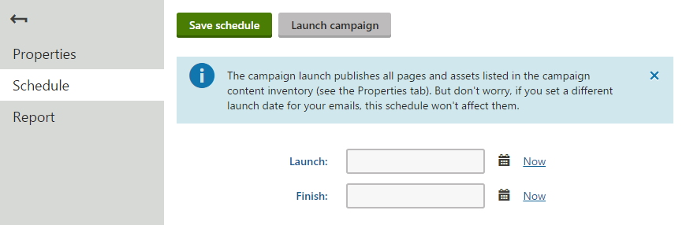
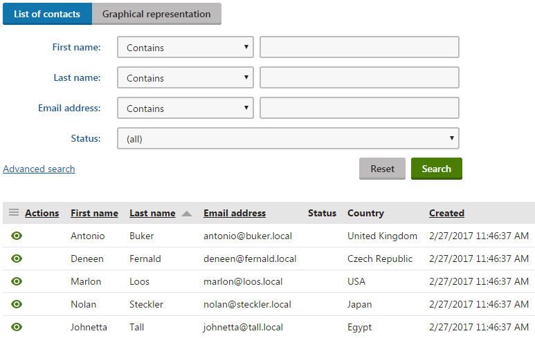
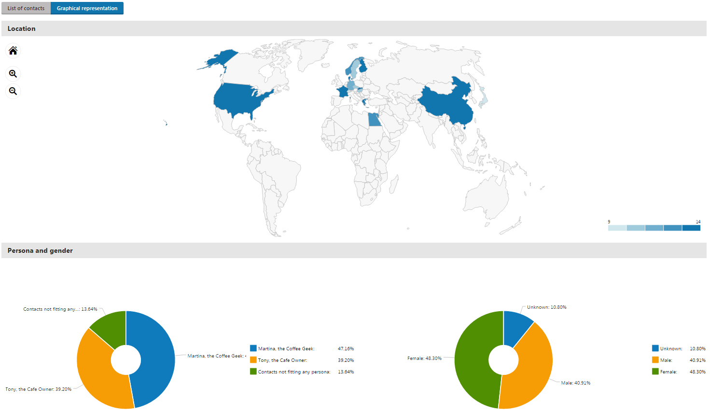
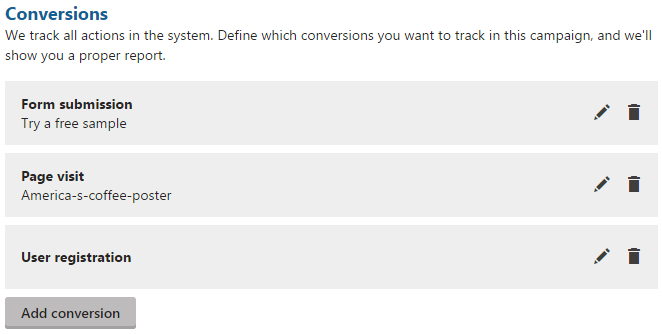
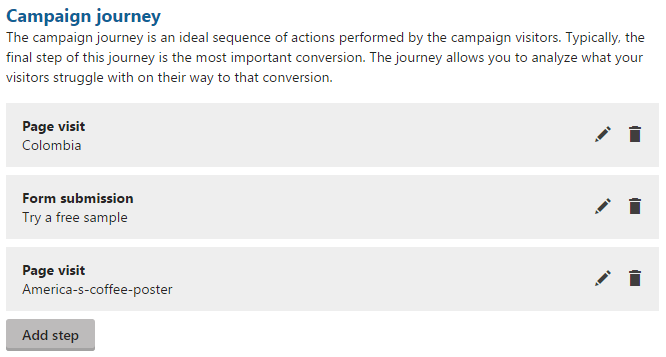
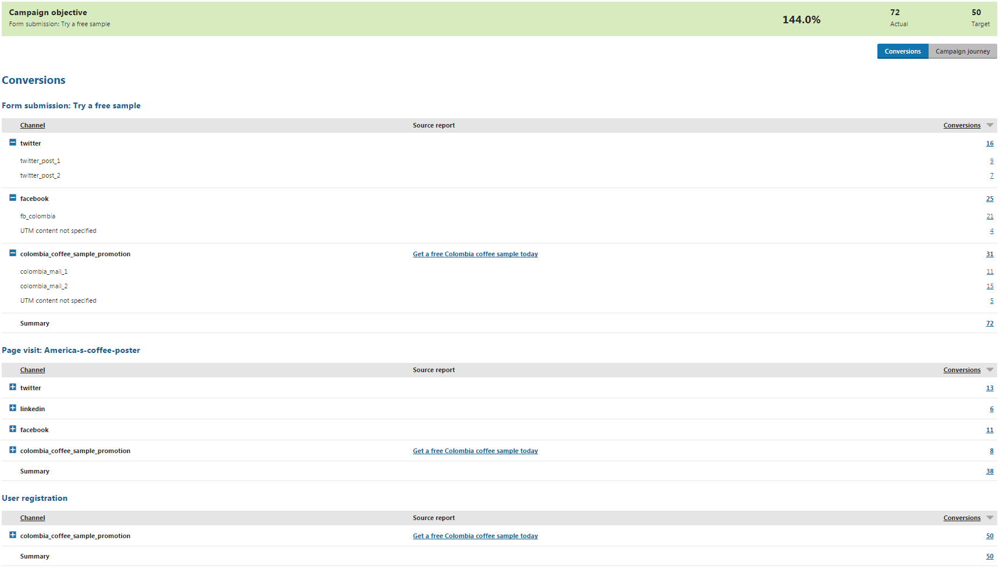
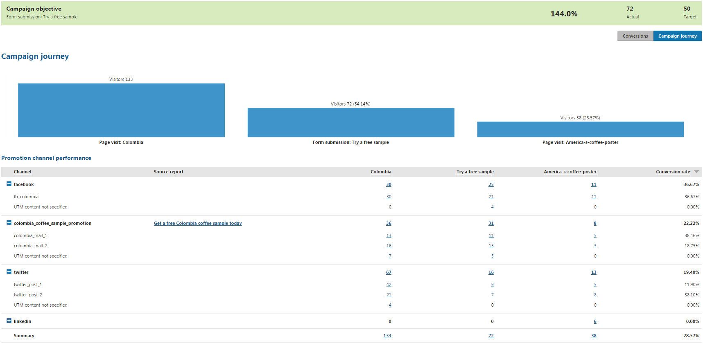

Scheduling and evaluating campaigns
After you set up a campaign based on your needs, you can either schedule the campaign or launch it right now. You can also schedule the campaign's finish time or finish it manually if the campaign is running.
Not sure what campaigns are?
To learn general information about on-line marketing campaigns in Kentico, see Campaigns.
To learn how to set up a campaign, see Setting up campaigns.
Scheduling and launching campaigns
Look at the table to find out which action is possible in which campaign status:
|
|
Draft |
Scheduled |
Running |
Finished |
|
Schedule a campaign's launch |
|
|
|
|
|
Launch a campaign |
|
|
|
|
|
Schedule a campaign's finish |
|
|
|
|
|
Finish a campaign |
|
|
|
|
You need to add at least one conversion to launch a campaign.
To schedule or launch a campaign:
Open the Campaigns application.
Edit (
 ) the campaign that you want to schedule or launch.
) the campaign that you want to schedule or launch.Switch to the Schedule tab.
Schedule or launch the campaign:
To schedule the campaign:
Enter a date to the Launch field
You can click the Calendar (
 ) button to pick a date and time from a calendar.
) button to pick a date and time from a calendar.
(Optional) Enter a date to the Finish field if you want to plan the campaign's finish time.
Click Save schedule.

Filling out the Schedule tab
To launch the campaign immediately:
Click Launch campaign.
Confirm the dialog.
The system saves the launch preferences and either schedules or launches the campaign based on your setting.
Kentico EMS required
Features described on this page require the Kentico EMS license.
Launch manually, schedule the finish
To schedule just the finish time, follow the same process.
Schedule the campaign:
Launch – click Now
Finish – set to your desired date and time
Save schedule.
If you schedule or launch a campaign, you cannot do the following actions in the campaign:
Change the display name
Change the UTM parameter
Remove a conversion when there is only one left
After the campaign launch
The launch:
Publishes content from the Campaign content inventory section on the Properties tab that is not published at the moment.
Does NOT publish content that has the publish date specified directly. For example, when a page has its Publish from field filled (when editing a page in the Pages application on the Form tab).
Sends emails from the Campaign promotion section on the Properties tab.
Does NOT send emails that have the send date specified directly (Email marketing application -> edit an email campaign -> edit an email -> Send tab -> Date and time field) .
Does NOT send A/B tested emails that have the send date specified directly (Email marketing application -> edit an email campaign -> edit an A/B tested email -> Send tab -> Change mail-out time to field).
Does NOT send already sent emails.
After the campaign is launched, you can check the campaign's reports on the Report tab when viewing or editing the campaign. The reports are recalculated regularly to provide the most recent data. By default, the reports are recalculated every hour until the campaign is finished.
Changing the report recalculation interval
An administrator can change the interval if desired, see Changing the campaign report update interval.
Evaluating campaigns
When you no longer want to track the actions that visitors perform through this campaign, finish the campaign.
Finishing a campaign
If you are not sure how to finish a campaign:
Open the Campaigns application.
Edit (
) the campaign that you want to finish.Switch to the Schedule tab.
Click Finish now.
Confirm the dialog.
The system stops tracking the visitors. You cannot run a campaign again once it was finished.
Then, see the reports to evaluate the campaign:
Open the Campaigns application.
Edit (
) the campaign that you want to evaluate.Make sure you are on the Report tab.
On the Report tab, you can see Conversions tables with campaign statistics and track how it fulfills the defined campaign objective. Click Campaign journey to display the campaign journey statistics.
See the example below if you are not sure about the difference between conversions and the campaign journey.
Viewing demographics data of converted contacts
Clicking individual conversion numbers in the Conversions or Campaign journey sections on the Report tab opens the Contact demographics page in a separate browser tab. The Contact demographics page displays a detailed demographic breakdown of contacts, including location, fitting persona, gender, and age, converted via the selected activity type and channel. For example, you can view the demographic breakdown of visitors that visited a targeted page via a Twitter post.
Note
If you lack sufficient permissions to inspect individual contacts, you will be redirected to the dashboard when opening individual conversion reports.
To correct this issue, contact your administrator and request he sets the permissions for the Contact management module to Read for your role or account.
The Contact demographics page is divided into the List of contacts and Graphical representation tabs.
The List of contacts tab allows you to inspect contacts hidden behind the numbers in the campaign conversions report. You can also click View contact details (
 ) to inspect individual contacts.
) to inspect individual contacts.

List of contacts tabThe number of contacts displayed on the List of contacts tab does not need to match the number on the conversion report. Campaign conversion reports count every hit even if performed by an already tracked contact, whereas the List of contacts tab displays each contact only once.
The Graphical representation tab graphically visualizes the converted contact's demographic data, for example:

Graphical representation tab
Example – Evaluating a campaign
In the following example, the goal is to promote visits of our cafes by offering free coffee samples. In the best case scenario, the visitors subscribe for a free coffee sample.
As conversions, add a submission to free coffee sample, opening a poster, and a user registration.

Setting conversions
To set the campaign's journey, add that the visitor opens the landing page, then subscribes for a free coffee sample, and at the end opens the coffee poster.

Setting the campaign journey
Finally, set the campaign objective to be the number of submitted forms for a free coffee sample. The goal is to reach 418 submissions, so just type 418 into the Target field of the objective.
Then, launch the campaign and let it run. After finishing the campaign and switching to the Report tab, you can see reports for the set conversions.
Evaluating conversions
Conversion reports display whether your campaign objective was fulfilled, and you can also see a table with statistics for each conversion you added on the Properties tab. In the tables, you can see how many conversions were tracked from each action from each traffic source (based on the utm_source and utm_content parameters).
Clicking on individual conversion numbers opens a demographic breakdown of the converted contacts from the selected action and traffic source.
More information about emails
To display more information about individual emails sent as part of the campaign, see Tracking marketing emails.

Evaluating conversions
UTM content parameter not specified
When you do not specify the UTM content parameter for individual marketing emails or social media posts, your reports on the Conversions and Campaign journey tabs will contain statistics with the UTM content not specified label.
Evaluating the campaign journey
To see the campaign journey report, click the Campaign journey button. In the chart and the table, you can see which channels and sources were effective. You can also click individual conversion numbers to open a demographic breakdown of the converted contacts from the selected action and traffic source.

Evaluating the campaign journey